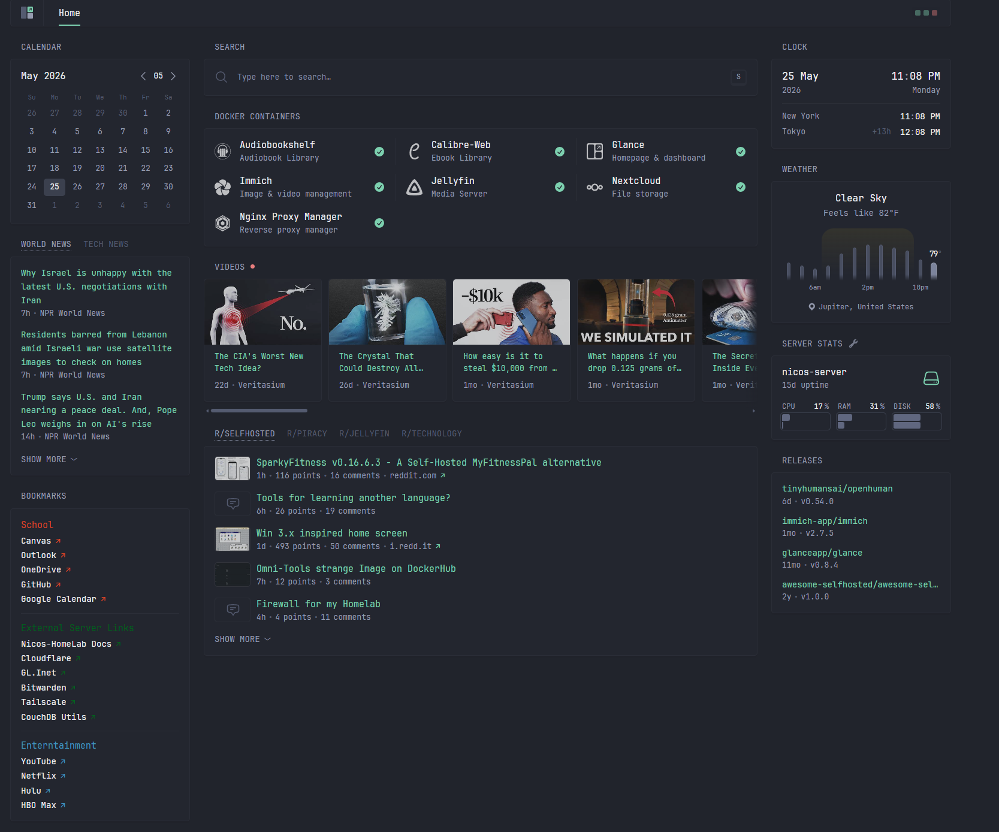

nicos-home-lab
Documentation of my progress building my personal home lab. A personal project started 3/14/26!
Current Status
5/25/26 Update
Retired the 2TB WD drive with 2 1TB 2.5" WD Blue drives. RAID 1 is configured with both the newer drives. I moved the data that was on the older drive to the newer drives. After that, I conducted a SMART scan on all my currently used drives. I found my other externally mounted drives (3tb and 256gb) are showing signs of age and warning as well. Due to this, I am slowly leaning away from those drives before failure. I recently purchased a 4TB NAS Ironwolf Seagate NAS HDD for $170 (ouch.) I've read that I probably should maximize the storage potential, but I am still a college student and I am sure I'm not going to fill up 4TB immediately.
I configured Nginx Reverse Proxy Manager! Orignally, I had my services exposed through cloudflare tunneling to allow me to access my services with a nice domain url and when I am not connected to my network; however, I quickly learned that is not the most optimal and secure way to access my services. I sat down and configured the reverse proxy, tailscale, and cloudflare to allow me to securely access my services whether or not I am home. As long as I am connected to my tailscale network through my VPN, I can access my services. This was frustrating to configure at first, but I will note that down in my setup guides and errors I ran into.
I'm backing up my photos to an offsite backup first because... I ran out of google cloud storage (omg shocker right). I don't want to pay the recurring service anymore, so I'm using google takeout to all me to free up storage on my account, but still have my photos in a safe place. Slowly, I'll upload them to immich.
Current plans are to slow down with the services I am adding. I do want to implement ad blocking throughout my network and the infamous *arr stack, but I realize I should start actively using my services before I continue to add more. Additionally, I really wish to upgrade my specs. The drive failure scares were a warning to me that I should look to more suitable options. I plan on replacing my main processing unit with a more suitable and newer device like a Dell optiplex. Afterwards, I want to upgrade my older NAS to a QNAP DAS as I do not need the network capabilities of a NAS when I can connect to my services through my own setup network.
That's all for now!
nico-home-lab homepage

Setup Photo as of 5/25/26